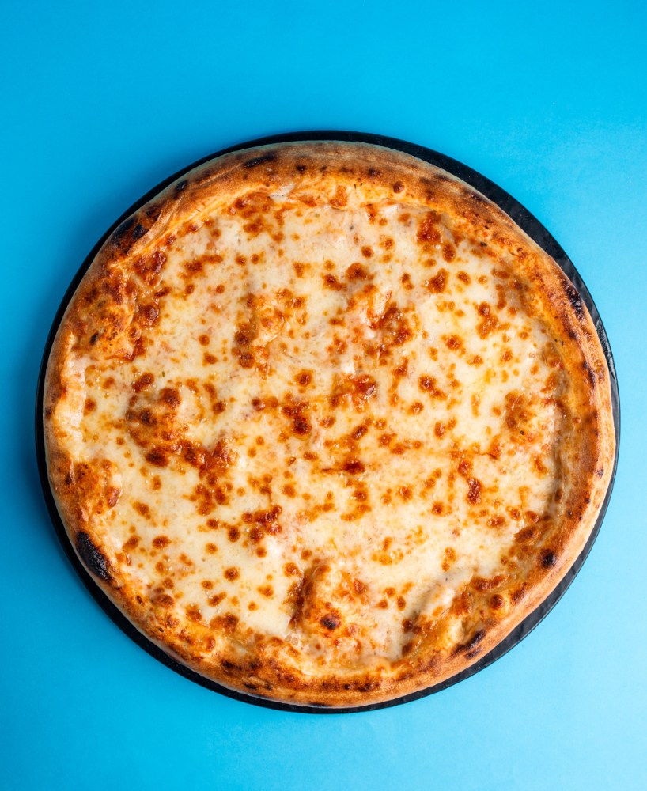

Easy Homemade Pizza Dough

How to make it!
This recipe will knock your socks off with its zingy flavor! Make all the housewives upset. A pizza like you never had, this simple dough recipe will have you
a bonafide pie! You can use store bought items frmor your local grocery and the daoughu can even last multiple days.
- 2c1/2 cups self rising flour
- cooking spray/li>
- 1 cup warm water
- 8 ounces sirolin beef, thinly slice
- 1 8 ounce of sliced fresh mushroooms
- thinly sliced onion
- green bell ppepper
- white american cheese
- ! teaspoon white sugart
- 12 mechican cheese blend/li>
- 2 tablespoon olive oil
Dsecription
- 1 cup plain greek yogurt
√Gather all ingredients. Preheat oven to 450 degrees F (230 degrees C), and lightly grease a pizza pan.
Ingredients for pizza dough, including flour, yeast, water, oil, sugar, and salt, arranged on a countertop.
Place warm water in a bowl; add yeast and sugar. Mix and let stand until creamy, about 10 minutes.
Overhead view of a bowl with blooming yeast for pizza dough
Dotdash Meredith Food Studios
Add flour, oil, and salt to the yeast mixture; beat until smooth. You can do this by hand or use a stand mixer fitted with a dough hook to make it easier.
Side angle shot of a stand mixer with a dough hook, mixing pizza dough
Dotdash Meredith Food Studios
Let rest for 5 minutes.
a top down view of pizza dough resting in a large metal mixing bowl.
Dotdash Meredith Food Studios
Turn dough out onto a lightly floured surface and pat or roll into a 12-inch circle.
Overhead shot of pizza dough on a floured surface being rolled with with wooden rolling pin
Dotdash Meredith Food Studios
Transfer to the prepared pizza pan.
Overhead shot of pizza dough pressed into a pizza pan
Dotdash Meredith Food Studios
Spread crust with sauce and toppings of your choice.
Overhead shot of a homemade pizza with sauce, cheese, and pepperoni, ready to be cooked
Dotdash Meredith Food Studios
Bake in the preheated oven until golden brown, 15 to 20 minutes. Remove from the oven and let cool for 5 minutes before serving.
A hand pulling a cheesy slice from a freshly baked pizza.
Allrecipes / Abbey Littlejohn
Recipe Tips
You can use all-purpose flour, but bread flour makes a superior crust. If you have a pizza stone, dust it with cornmeal and use it instead of a greased pizza pan.
Home